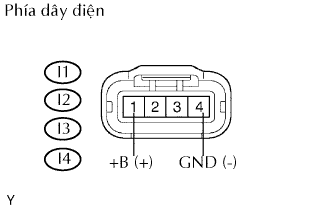
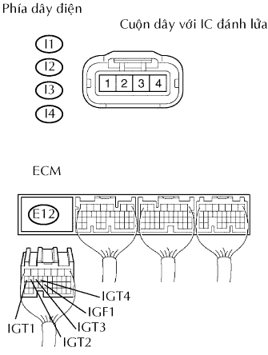
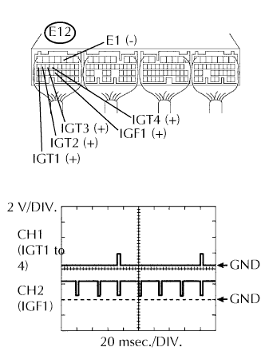

DTC P0351/14 Mạch Sơ cấp / Thứ cấp của Cuộn đánh lửa "A" |
DTC P0352/15 Mạch Sơ cấp / Thứ cấp của Cuộn đánh lửa "B" |
DTC P0353/14 Mạch Sơ cấp / Thứ cấp của Cuộn đánh lửa "C" |
DTC P0354/15 Mạch Sơ cấp / Thứ cấp của Cuộn đánh lửa "D" |
| Số mã DTC | Điều kiện phát hiện DTC | Khu vực nghi ngờ |
| P0351/14 P0352/15 P0353/14 P0354/15 | Không có tín hiệu IGF đến ECM khi động cơ đang nổ máy |
|
| 1.THỰC HIỆN THỬ MÔ PHỎNG |
Xoá các mã DTC (Xem trang Kích chuột vào đây).
Thay đổi vị trí của các cuộn đánh lửa (có IC đánh lửa).
Thực hiện phép thử mô phỏng.
| Hiển thị (phát ra DTC) | Đi đến |
| Các mã đã xoá lại phát ra | A |
| Các mã DTC khác | B |
|
| ||||
| A | |
| 2.KIỂM TRA CUỘN DÂY ĐÁNH LỬA (MẠCH NGUỒN) |
|  |
Ngắt các giắc nối cuộn đánh lửa I1, I2, I3 và I4 có IC.
Đo điện trở của các giắc nối phía dây điện.
| Nối dụng cụ đo | Điều kiện tiêu chuẩn |
| I1-4 (GND) - Mát thân xe | Dưới 1 Ω |
| I2-4 (GND) - Mát thân xe | Dưới 1 Ω |
| I3-4 (GND) - Mát thân xe | Dưới 1 Ω |
| I4-4 (GND) - Mát thân xe | Dưới 1 Ω |
Bật khoá điện ON.
Đo điện áp giữa của các giắc nối phía dây điện.
| Nối dụng cụ đo | Điều kiện tiêu chuẩn |
| I1-1 (+B) - I1-4 (GND) | 9 đến 14 V |
| I2-1 (+B) - I2-4 (GND) | 9 đến 14 V |
| I3-1 (+B) - I3-4 (GND) | 9 đến 14 V |
| I4-1 (+B) - I4-4 (GND) | 9 đến 14 V |
|
| ||||
| NG | |
| 3.KIỂM TRA DÂY ĐIỆN (CUỘN DÂY ĐÁNH LỬA - ECM) |
|  |
Ngắt các giắc nối cuộn đánh lửa I1, I2, I3 và I4 có IC.
Ngắt giắc nối E12 của ECM.
Đo điện trở của các giắc nối phía dây điện.
| Nối dụng cụ đo | Điều kiện tiêu chuẩn |
| I1-2 - E12-23 (IGF1) | Dưới 1 Ω |
| I2-2 - E12-23 (IGF1) | Dưới 1 Ω |
| I3-2 - E12-23 (IGF1) | Dưới 1 Ω |
| I4-2 - E12-23 (IGF1) | Dưới 1 Ω |
| I1-3 - E12-17 (IGT1) | Dưới 1 Ω |
| I2-3 - E12-16 (IGT2) | Dưới 1 Ω |
| I3-3 - E12-15 (IGT3) | Dưới 1 Ω |
| I4-3 - E12-14 (IGT4) | Dưới 1 Ω |
| I1-2 hay E12-23 (IGF1) - Mát thân xe | 10 kΩ trở lên |
| I2-2 hay E12-23 (IGF1) - Mát thân xe | 10 kΩ trở lên |
| I3-2 hay E12-23 (IGF1) - Mát thân xe | 10 kΩ trở lên |
| I4-2 hay E12-23 (IGF1) - Mát thân xe | 10 kΩ trở lên |
| I1-3 hay E12-17 (IGT1) - Mát thân xe | 10 kΩ trở lên |
| I2-3 hay E12-16 (IGT2) - Mát thân xe | 10 kΩ trở lên |
| I3-3 hay E12-15 (IGT3) - Mát thân xe | 10 kΩ trở lên |
| I4-3 hay E12-14 (IGT4) - Mát thân xe | 10 kΩ trở lên |
|
| ||||
| OK | |
| 4.KIỂM TRA ECM (TÍN HIỆU IGT1, IGT2, IGT3, IGT4, IGF1) |
|  |
Trong khi đang quay khởi động, hãy kiểm tra dạng sóng của giắc nối ECM bằng cách dùng máy đo hiện sóng.
| Nối dụng cụ đo | Điều kiện tiêu chuẩn |
| E12-17 (IGT1) - E12-3 (E1) | Dạng sóng đúng như trong hình vẽ |
| E12-16 (IGT2) - E12-3 (E1) | Dạng sóng đúng như trong hình vẽ |
| E12-15 (IGT3) - E12-3 (E1) | Dạng sóng đúng như trong hình vẽ |
| E12-14 (IGT4) - E12-3 (E1) | Dạng sóng đúng như trong hình vẽ |
| E12-23 (IGF1) - E12-3 (E1) | Dạng sóng đúng như trong hình vẽ |
| Đặt dụng cụ | Điều kiện |
| 2 V/DIV., 20 msec./DIV. | Không tải |
|
| ||||
| OK | |
| 5.KIỂM TRA XEM MÃ DTC CÓ TÁI XUẤT HIỆN KHÔNG (CUỘN ĐÁNH LỬA - CẦU CHÌ INJ) |
Xóa mã DTC. (Xem trang Kích chuột vào đây).
Nối máy chẩn đoán với giắc DLC3.
Bật khóa điện đến vị trí ON và bật máy chẩn đoán ON.
Vào các menu sau: Powertrain / Engine and ECT / DTC.
Đọc mã DTC.
| Hiển thị (phát ra DTC) | Đi đến |
| Một hoặc nhiều hơn trong các mã P0351/14, P0352/15, P0353/14 và P0354/15 | A |
| Không phát ra | B |
|
| ||||
| A | ||
| ||